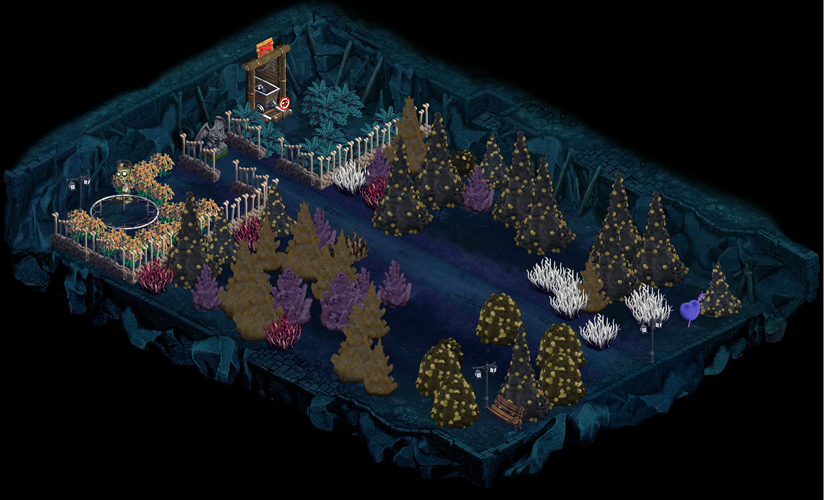

Получено: файл; исходный URL. Скриншот локации; оригинал 824×500 px.


Пещеры ЗУ
Браузерная социальная версия; историческая статья, дата редакции неизвестна- Тип
- Подземелья
- Версия и дата
- Браузерная социальная версия; историческая статья, дата редакции неизвестна
Данные по источнику · Браузерная социальная версия · историческая статья, дата редакции неизвестна
Предварительно: один материал ЗомбиСити / зеркало; требует сверки. Требуется сверка.
- Описание и доступ (исторический источник)
- Ничего нельзя выращивать. Чтобы попасть в Пещеры ЗУ, нужно сперва достроить Вход в пещеры ЗУ, который находится в Подножье. В Пещерах ЗУ ничего нельзя выращивать или строить. Все что находится в пещере вырубается только Палочками-выручалочками.
Данные по источнику · браузерная Зомби Ферма, сеть в статье не уточнена · 06.04.2012
Предварительно: Исторический источник; актуальность и переносимость на другие версии не установлены.. Требуется сверка.
- Прохождение
- После Подножья автор описывает пещеру ЗУ, ожидание 12 часов у загадки и ещё полсуток у следующей; затем требуется помощь друзей. Точные условия и названия заданий находятся на иллюстрациях.
Данные по источнику · Историческая браузерная версия; социальная сеть не указана · 11.01.2014 — дата публикации копии
Предварительно: Текст и иллюстрации могут происходить с ЗомбиСити и его зеркал; не независимое подтверждение. Актуальность не проверена.. Требуется сверка.
- Доступ
- Достроить Вход в Пещеры ЗУ в Подножье; недостроенный Мексиканский тоннель ведёт в Мексиканский каньон.
- Ограничения
- По статье в пещерах нельзя выращивать или строить; ресурсы вырубаются палочками-выручалочками. Исключение для восстановления упомянутого тоннеля в статье не разъяснено.
Данные по источнику · браузерная «Зомби Ферма» / «Зомби Мания»; платформа не уточнена · снимок каталога 10.12.2019; дата редакции неизвестна
Предварительно: Фанатский каталог; возможны общие картинки для разных локаций и зависимость от других источников.. Требуется сверка.
- Каталог
- В разделе «Домашние Острова Зомби Фермы» указана локация «Пещеры ЗУ».
- Оговорка
- Каталог показывает название, картинку и ссылку; отдельная статья по этой ссылке не прочитана в рамках этого импорта. Условия доступа и версии требуют проверки.
- Сравнение снимков
- Эта же подпись, раздел и адрес картинки присутствуют в снимке того же каталога 14.09.2018; это не независимое подтверждение.
Связанные сущности
- Мексиканский каньон — переход через Мексиканский тоннель по ZombieLend
- Подножье — переход через вход в пещеры по ZombieLend